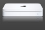
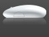

Slider Gallery
This shows a demonstration of a slider widget from the jQuery UI library used to create the same effect used on Apple's web site.
Read the article, and see the screencast this demonstration relates to

- 

- 


This shows a demonstration of a slider widget from the jQuery UI library used to create the same effect used on Apple's web site.
Read the article, and see the screencast this demonstration relates to